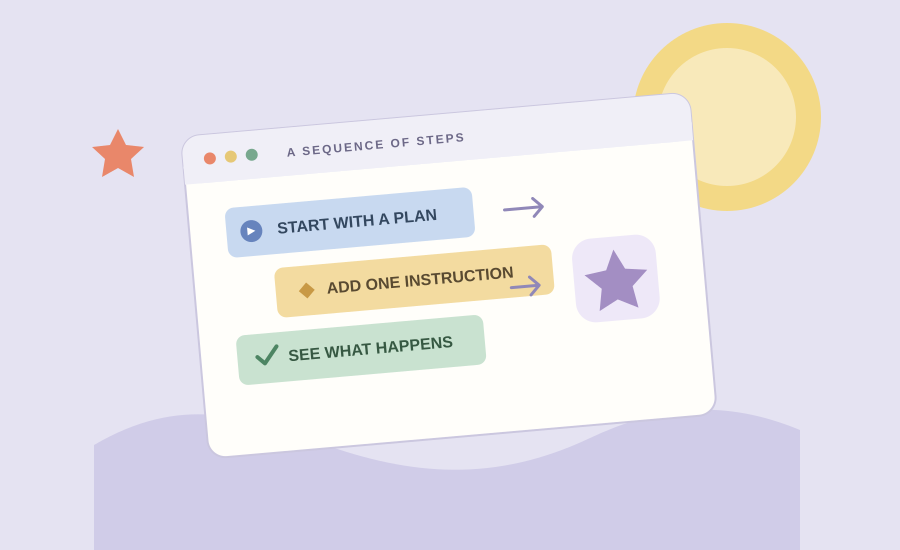
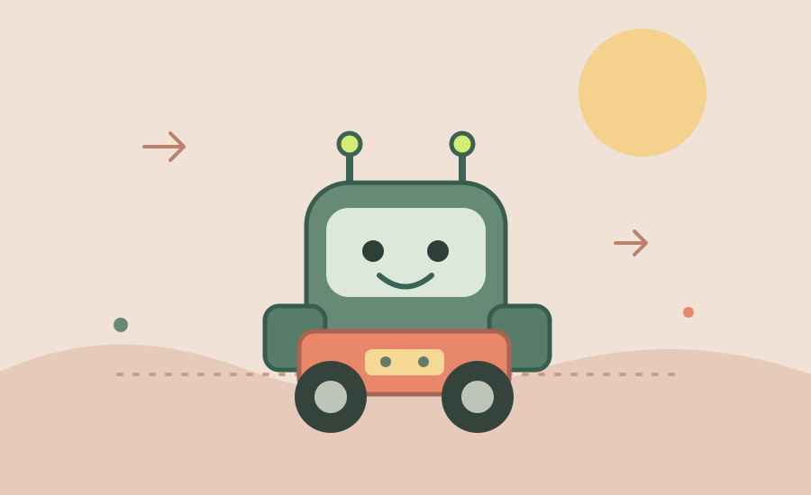

01
01
Personal Portfolio
A small website to bring my class work together. Building it is my chance to practice semantic HTML, responsive CSS, and a little JavaScript in one place.
Projects · Things I’ve been making
These projects are part of my learning trail: a first portfolio, an Hour of Code activity, and a robotics project. The notes describe the work; the images are easy to replace with my own screenshots.
01
A small website to bring my class work together. Building it is my chance to practice semantic HTML, responsive CSS, and a little JavaScript in one place.

02A short coding activity built around making programming approachable. It helped me think about how a few clear instructions can turn into a result you can see.

03A hands-on look at how software and hardware work together. The project is a reminder that testing an idea in the physical world often means adjusting it more than once.
More to come. I’ll add project screenshots and notes as the work develops.
See how it fits together